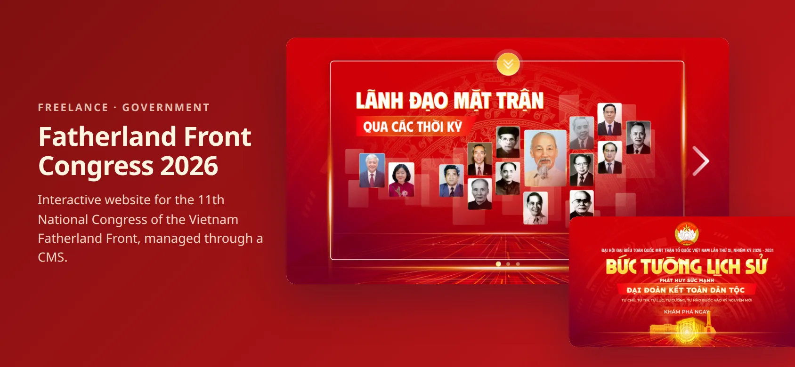
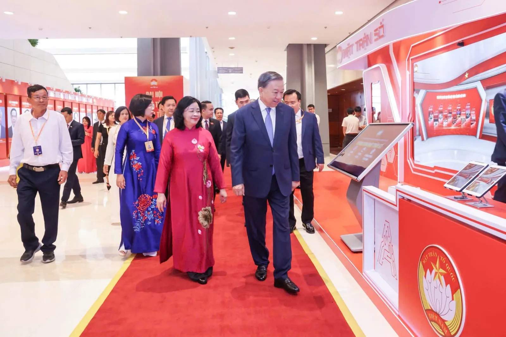
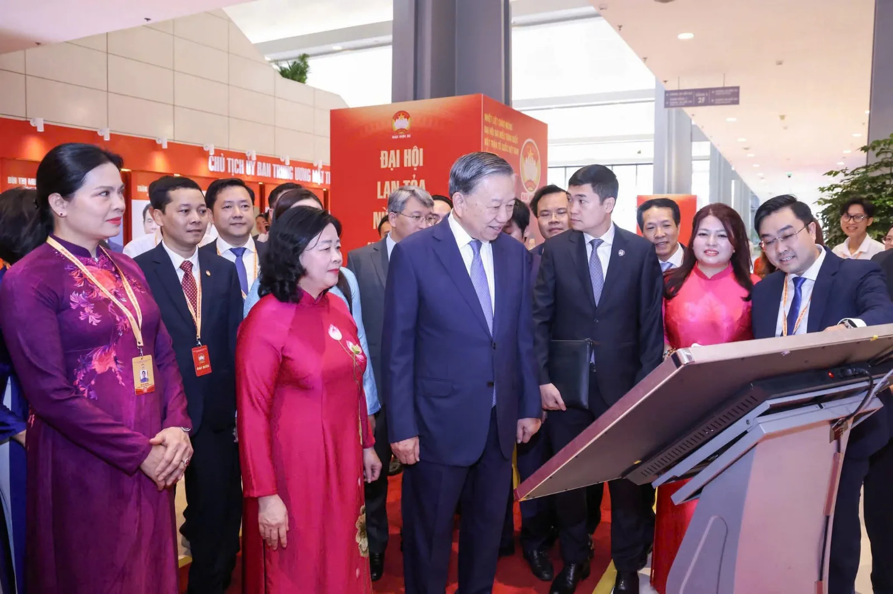
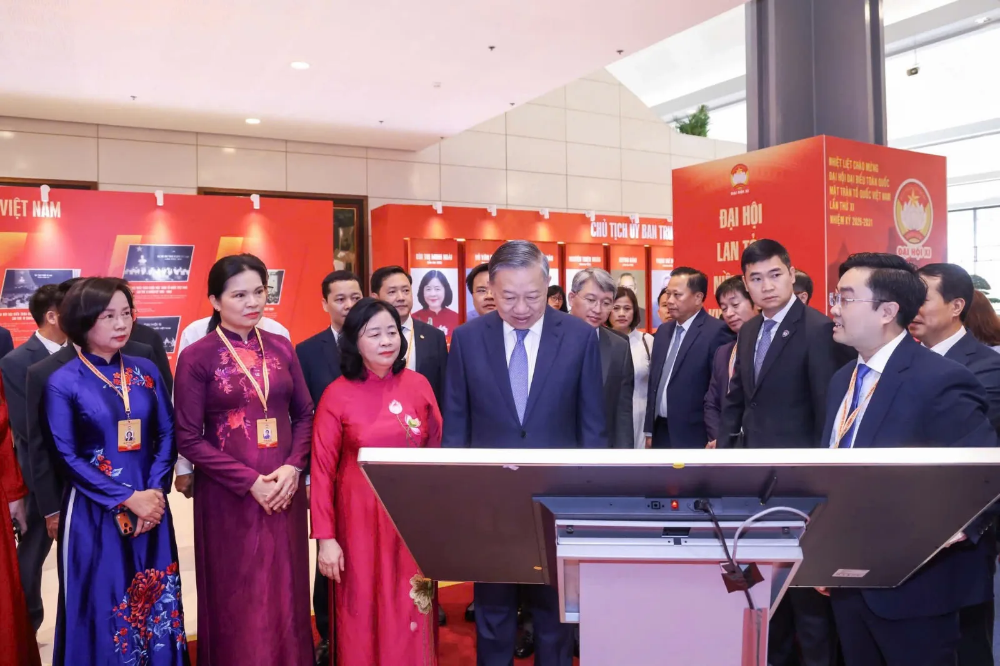

FREELANCE · 2026
Vietnam Fatherland Front Congress 2026
A digital exhibition for the 11th National Congress of the Vietnam Fatherland Front (term 2026–2031), shown on touch-screen kiosks at the congress: history, leaders, past congresses, and achievements.
- Next.js
- React
- TypeScript
- Framer Motion
- Embla Carousel
- Strapi 5
- PostgreSQL
- AWS S3
Freelance project for a government body. The source code is private.

At a glance
For the 11th National Congress of the Vietnam Fatherland Front, the organizers wanted a digital exhibition that tells the Front’s story: its leaders through the eras, every past congress, and what it achieved in the last term. It ran on touch-screen kiosks in the exhibition area of the congress, where leaders and delegates explored it in person.
I built it alone, end to end: the interactive website and the Strapi CMS behind it.
At the congress



Built against a fixed date
A national congress does not move its date. I had about four weeks from the first commit to a finished exhibition, and the requirements kept changing along the way, as you would expect for an event of this importance: new sections, new content, and a home page that was redesigned from scratch after the first version was already built.
Three decisions made that pace possible:
- Content out of the code from day oneEvery page reads its text and photos from the CMS, with one content type per page. When content changed, the organizers edited it themselves instead of waiting for me.
- Updates without a redeployPages refresh their content from the CMS about once a minute, so last-minute changes reached the kiosks on their own.
- Reusable building blocksFull-screen slides, carousels, a detail view, page transitions, and a loader were built once and reused, so a new section was mostly content work, not new code.
What it does
History wall
An animated opening screen with an “Explore” menu and slides that lead into each part of the exhibition.
Leaders through the eras
Portraits and profiles of the Front’s chairpersons across its history, each opening into a detail view.
Past congresses
A carousel through every earlier congress, with photos, and documents that open right on the kiosk.
Results of the last term
A slider of the Front’s results, each with its own detail page.
Featured digital platforms
A listing and a detail page for each of the Front’s digital platforms.
Virtual-reality exhibition
An embedded VR tour, with its link managed from the CMS.
How it works
- Kiosk experienceFull-screen sections with Framer Motion page transitions, a 3D loader, and images preloaded before each slide so nothing pops in on a large screen. Embla carousels respond to touch, drag, and the mouse wheel.
- FrontendNext.js App Router and TypeScript. Pages fetch their content on the server and revalidate every 60 seconds.
- CMSStrapi 5 on PostgreSQL with a content type per page, a rich-text editor, and automatic WebP conversion for uploads.
- MediaImages stored on AWS S3 and served through the Next.js image pipeline.